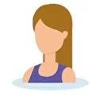

Обо мне
About me
Я люблю свою работу, моя душа очень открыта к детям. Я сама мама двух девочек, поэтому понимаю детскую психику и имею индивидуальный подход к каждому ребенку. Работаю в логопедии и дефектологии с 2017 года. Имею сертификат об окончании специализированных курсов. Высшее образование по специальности педагог-психолог. Какие проблемы можно решить? Заикание, нарушение речи вследствие внешних факторов. Проблемы с чтением и письмом. Неправильное произношение слов, неразвитая речь. Плохое развитие межполушарных связей, негативизм. Недостаток внимания, педагогическая запущенность. Расстройства аутистического спектра. У каждого ребенка с таким диагнозом наблюдается нарушение внимания, поэтому для него очень важно уметь концентрироваться. Как мне работать? Ребенок проходит диагностику. Договариваемся о личной встрече, потом я еду к вам домой. Проводим пробное занятие с ребенком.Договариваемся о цене. В зависимости от задачи, сложности решения и продолжительности занятий я назначаю цену
Индивидуальные занятия. Индивидуальные занятия с каждым ребенком проводятся индивидуальноI love my job, my soul is very open to children. I I am a mother of two girls myself, so I canunderstand the child’s psyche and I have an individual approach to each child. I have been working in speech therapy and defectology since 2017. I have a certificate of completion of specialized courses. Higher education in the specialty of teacher-psychologist. What problems can I solvestuttering, speech impairment due to external factors.problems with reading and writing. Incorrect pronunciation of words, underdeveloped speech. Poor development of interhemispheric connections, negativity. Lack of attention, pedagogical neglect. Autism spectrum disorders. Every child with this diagnosis has an attention disorder.therefore, it is very important for them to be able to concentrate. How do I work? The child undergoes diagnostics. We arrange a personal meeting, then I go to your home. We conduct a trial lesson with the child.We agree on a price. Depending on the problem, the complexity of the solution and the duration of the lessons, I set a price
Individual lessons. Individual lessons with each child are held individually- Работаю в логопедии с 2017 года
- Имеется сертификат о прохождении специализированных курсов
- Высшее образование по специальности педагог-психолог.
- Работаю в коррекционной школе Петроградского района Санкт-Петербурга
- I have been working in speech therapy since 2017
- There is a certificate of completion of specialized courses
- Higher education with a degree in educational psychology.
- I work in a correctional school in the Petrogradsky district of St. Petersburg
Какие проблемы я помогу решить
What problems will I help solve
Это самые распространенные сложности, с которыми сталкиваются мои клиенты
These are the most common difficulties my clients encounter
- Заикание, нарушение речи вследствии воздействия внешних факторов
- Неправильное произношение слов, недоразвитая речь
- Недостаток внимания, педагогическая запущенность
- Stuttering, speech impairment due to external factors
- Incorrect pronunciation of words, underdeveloped speech
- Lack of attention, pedagogical neglect
- Problems with reading and writing
- Poor development of interhemispheric connections, negativism
- Autism spectrum disorders
- Проблемы с чтением и письмом
- Плохое развитие межполушарных связей, негативизм
- Расстройства аутистического спектра
В своей работе с детьми аутического спектра я использую балансборд.
У каждого ребёнка с таким диагнозом есть рассторойство внимания, поэтому им очень важно уметь концентрироваться.
Бланасборд способствует налаживанию координации и концентрации внимания. Так же, благодаря дополнительным занятиям с бордом, ребёнку будет проще поставить выговаривание шипяще-свистящих звуков.
In my work with children on the autism spectrum, I use a balance board.
Every child with this diagnosis has an attention disorder, so it is very important for them to be able to concentrate.
Blanasboard helps improve coordination and concentration. Also, thanks to additional lessons with the board, it will be easier for the child to pronounce hissing and whistling sounds.
Как проходят наши занятия
Подробнее с процессом работы можно ознакомится в моей группе вконтакте
How our classes are conducted
More details about the work process can be found in my VKontakte group
Как я работаю
How I work
1
Ребёнок проходит диагностику
Мы договариваемся о личной встрече, затем я выезжаю к вам на дом. Мы проводим пробное занятие с ребёнком.
The child is undergoing diagnostics
We agree on a personal meeting, then I go to your home. We conduct a trial lesson with the child.
2
Договариваемся о цене
В зависимости от проблемы, сложности ее решения и длительности занятий, я выставляю цену.
Agree on a price
Depending on the problem, the complexity of its solution and the duration of the lessons, I set a price.
3
Индивидуальные занятия
Занятия проходят с каждым ребенком индивидуально.
Individual lessons
Classes are held individually with each child.
Отзывы клиетнов
Customer reviews
Занимались с Татьяной Павловной 4 месяца. Результат видно на лицо! Контакт с ребенком был найден сразу. Благодарна за проделанную работу!
We studied with Tatyana Pavlovna for 4 months. The result is visible! Contact with the child was found immediately. Thank you for the work done!
Хочу поблагодарить Татьяну Павловну за результат ее работы. Ребёнок стал более четко произносить звуки, которые либо плохо произносились, либо отсутствовали.
I would like to thank Tatyana Pavlovna for the result of her work. The child began to more clearly pronounce sounds that were either poorly pronounced or absent.
Очень хороший логопед. Быстро нашла подход к моему непоседе. Занимались в игровой форме. Результат очень порадовал. Спасибо большое!
Very good speech therapist. She quickly found an approach to my fidget. We practiced in a playful way. I was very pleased with the result. Thank you very much!
Прекрасный логопед Татьяна помогла моей дочке исправить деффекты в речи. Очень интересные и разнообразные занятия. Спасибо вам за вашу любовь к детям. Дочка вас часто вспоминает.
The wonderful speech therapist Tatyana helped my daughter correct her speech defects. Very interesting and varied activities. Thank you for your love for children. My daughter remembers you often.
Свяжитесь со мной!
Опишите свою проблему. Через некоторое время я отвечу и мы обсудим все, что вас интересует.
Contact me!
Describe your problem. After a while I will answer and we will discuss everything that interests you.